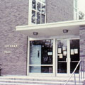

|  |
Sheahan Hall Close
Built in 1865
Office of the current College President |
In March of 1961 Brother Linus Richard Foy, President of Marist College, received confirmation for a government loan for a dormitory that would accommodate 120 students and three faculty advisors. This was the first building on the property that was not constructed by the Marist Brothers since the property was purchased in 1908. Sheahan Hall was one of the first dormitories where women lived when the College became a coeducational institution in 1969. It currently houses freshman students and is named in memory of Monsignor J. F. Sheahan, pastor of St. Peter's Church in Poughkeepsie. Monsignor Sheahan used his influence to help the Brothers purchase the Bech Estate in 1908. Today this property forms the entire Marist College campus south of the Waterworks Road (the main entrance to the campus).